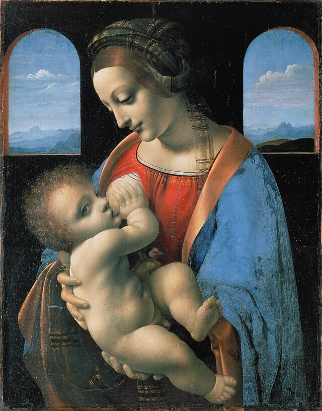
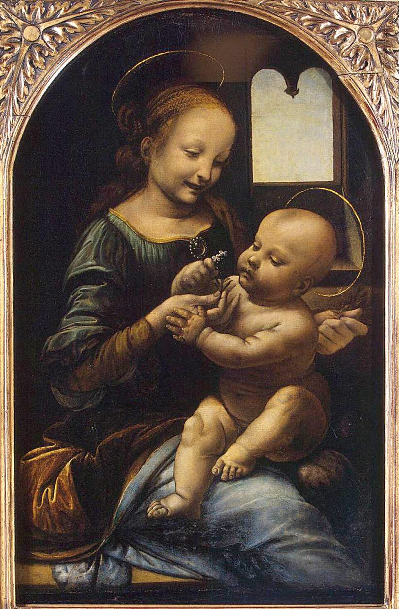

Шедевры живописи эпохи Возрождения в Эрмитаже
«Мадонна Бенуа» Леонардо да Винчи
Эрмитаж приобрёл картину из личной коллекции жены архитектора Леонтия Бенуа Марии в 1914 году. С тех пор её стали называть по фамилии бывших владельцев. Другое название «Мадонны Бенуа» — «Мадонна с цветком».
Это произведение — одно из ранних у Леонардо, он написал его будучи 26-летним. «Мадонну Бенуа» отличает особая трактовка традиционного иконографического сюжета — до Леонардо на такое никто не осмеливался. На полотне — итальянская девушка XV века, одетая по тогдашней моде. Черты её лица не идеальны, не строги, она улыбается и смеётся, протягивая младенцу Иисусу цветок. И Мария, и ребёнок изображены в движении, им пронизана вся картина. Это было непохоже на привычные статичные изображения Девы Марии и младенца Христа. Здесь художник впервые использовал масляные краски, и это было новшеством не только для него самого, но и для всех флорентийских живописцев.
«Мадонна Литта» Леонардо да Винчи
Эта картина также названа по имени коллекционера — итальянского герцога Антонио Литта. Эрмитаж приобрёл «Мадонну Литта» в 1864 году. Её состояние было ужасным: её пришлось не просто косметически почистить, а произвести сложный процесс переноса на холст с доски.
К моменту написания картины да Винчи был уже состоявшимся мастером в возрасте от 40 до 50 лет — год завершения работы доподлинно неизвестен. «Мадонна Литта» стала одним из первых произведений в стиле Высокого Возрождения. Долгое время искусствоведы спорили, действительно ли Леонардо да Винчи — автор этой картины, потому что в ней явно присутствуют две различные техники. С одной стороны — типичная для да Винчи треугольная композиция, мастерские переходы светотени. С другой — грубая растушёвка тёмных оттенков, не-«леонардовский» младенец Христос, странная прорисовка складок на плаще Марии. В итоге было решено, что картина принадлежит кисти Леонардо, но завершена с помощью его ученика Больтраффио.
 